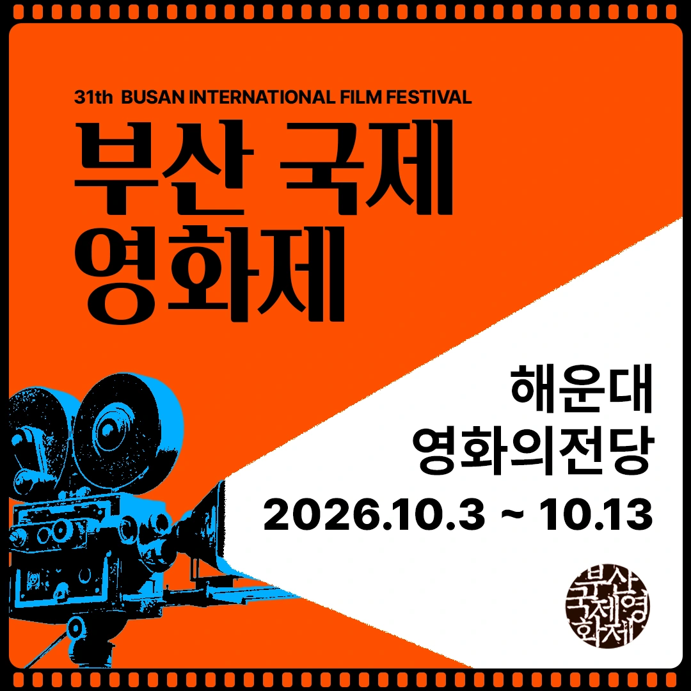
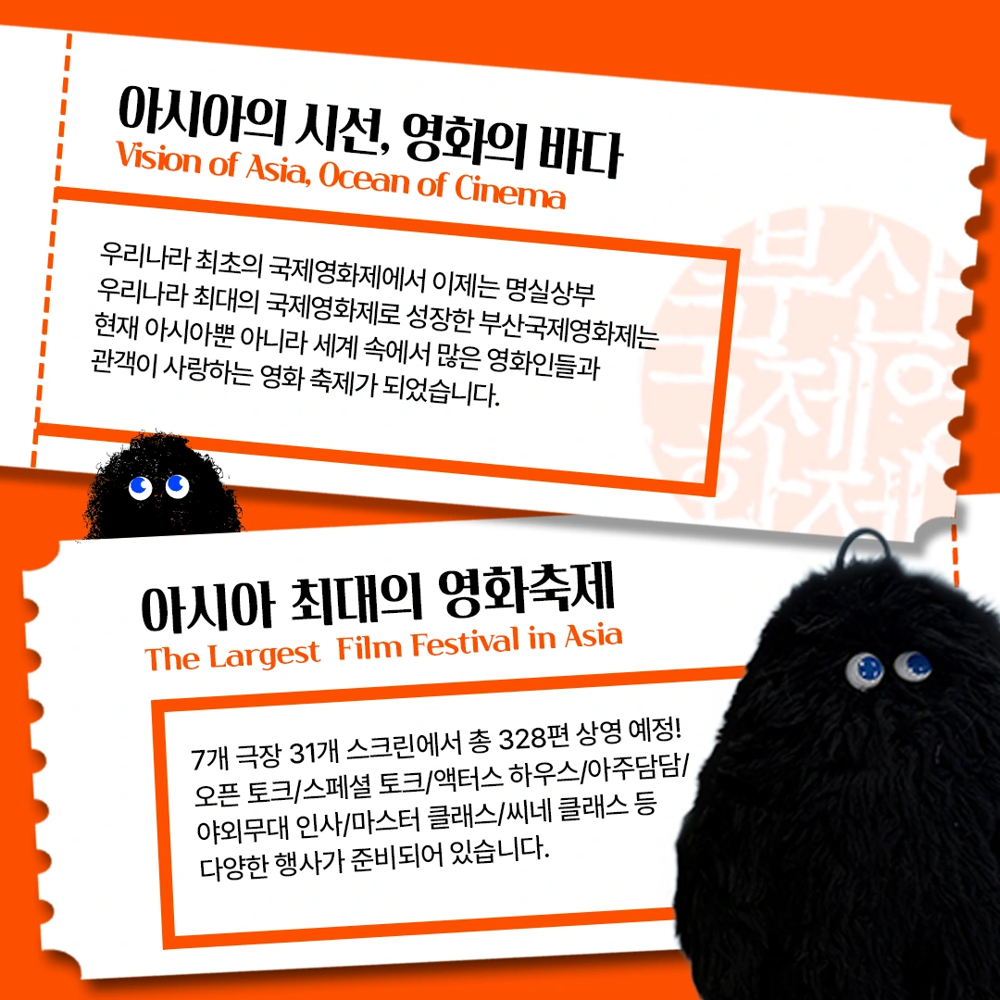
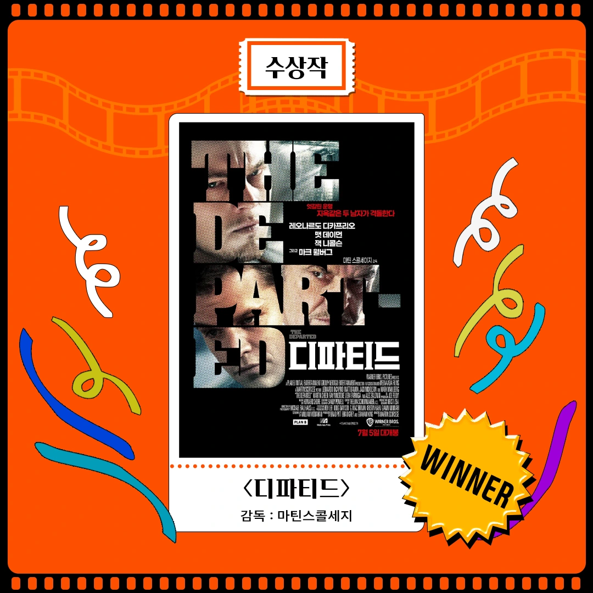
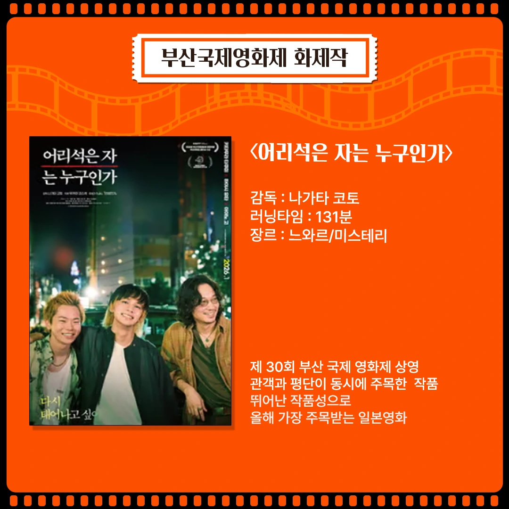
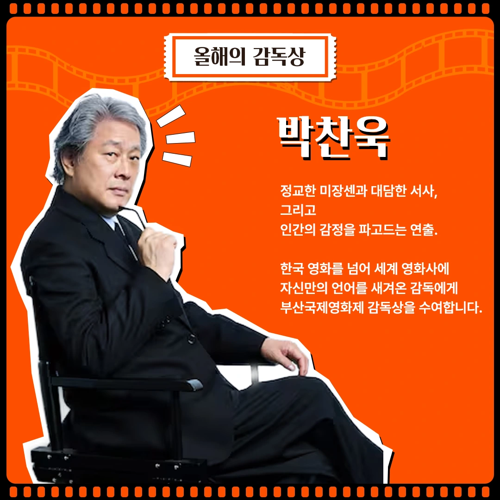
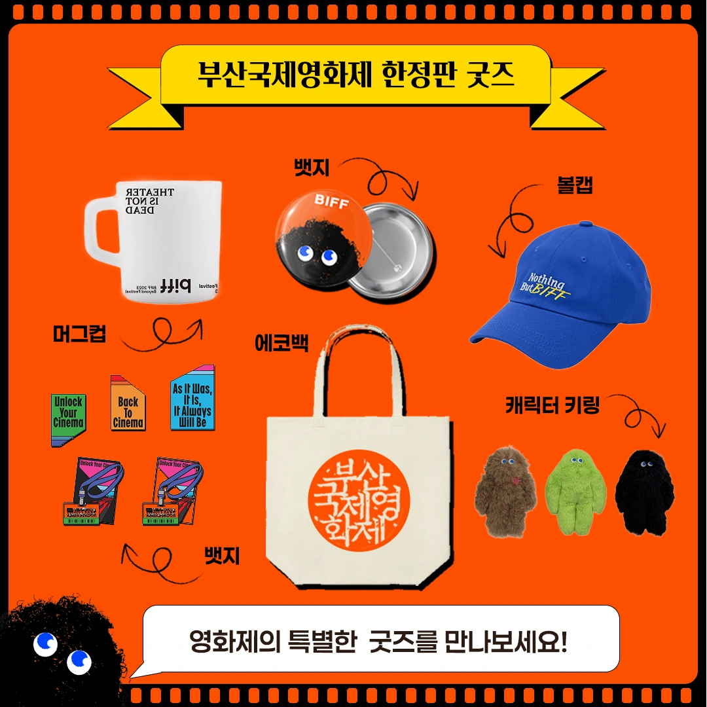
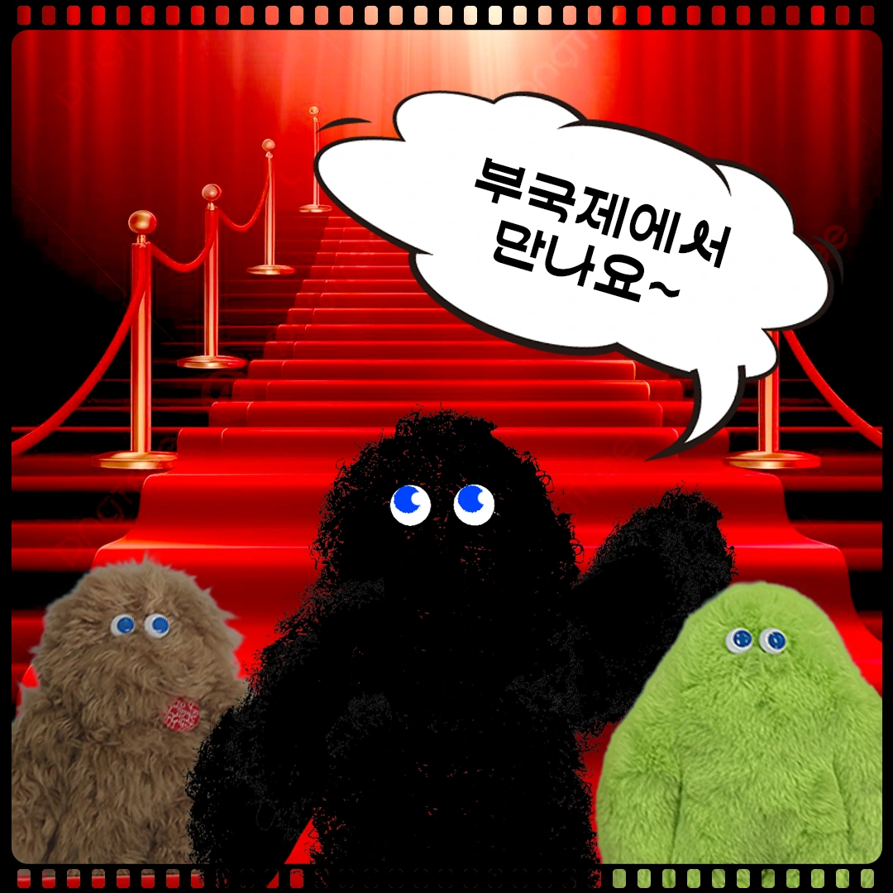

부산국제영화제 카드뉴스
그린컴퓨터디자인학원 · 3인 팀 프로젝트
참여자 송현빈 · 이은진 · 김예지
김예지 담당 역할 · 기획·자료 조사 참여, 카드 디자인 아이디어 제안
주요 도구 Adobe Photoshop







그린컴퓨터디자인학원 · 3인 팀 프로젝트
참여자 송현빈 · 이은진 · 김예지
김예지 담당 역할 · 기획·자료 조사 참여, 카드 디자인 아이디어 제안
주요 도구 Adobe Photoshop






